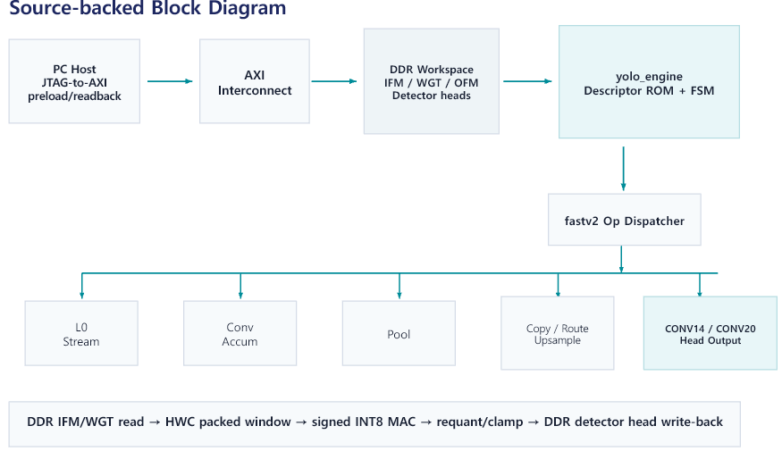
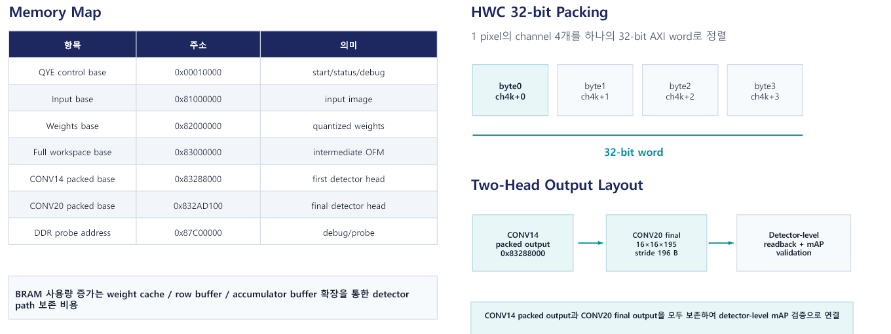

2. YOLOv2 Full-Graph FPGA 구조
YOLOv2를 FPGA로 옮길 때 가장 어려운 일은 곱셈기를 만드는 것보다 모든 layer가 같은 데이터 규칙을 공유하도록 연결하는 것입니다. 각 convolution의 출력 크기와 주소는 달라지고, Pool은 해상도를 줄이며, Route는 앞서 저장한 feature map을 다시 읽고, Upsample은 두 번째 detection head를 위해 공간 크기를 두 배로 만듭니다. 이 구현은 DDR을 전체 모델의 공용 workspace로 사용하고, 22개 descriptor가 layer의 종류·shape·주소를 바꾸며 그래프를 진행합니다. 144-lane packed MAC은 계산의 중심이지만, 실제 처리 속도는 weight 공급, feature 재사용, requantization, write-back, scheduler 대기까지 합친 결과로 결정됩니다.
최종 구현 사양
Nexys 4 DDR의 Artix-7은 100MHz로 동작하며, JTAG-to-AXI가 host의 검증 스크립트와 DDR을 연결한다. FPGA 내부에는 22단계 descriptor ROM, graph scheduler, op dispatcher, 144개 packed MAC lane, weight cache, feature·accumulator buffer, requantization과 write-back 경로가 있다. 입력과 weight는 실행 전에 DDR에 적재하고, 네트워크가 끝나면 CONV14와 CONV20 두 head를 다시 읽는다. Host는 layer마다 명령하지 않고 start와 done만 관리하며, 그래프 진행은 RTL scheduler가 담당한다.
- Device
- xc7a100tcsg324-1 · Artix-7
- DDR
- DDR2 DQ 16-bit · MIG AXI UI 64-bit
- Host
- JTAG-to-AXI 32-bit
- 출력
- 8×8×195 + 16×16×195
YOLOv2 그래프를 이루는 연산
Convolution은 작은 kernel을 이미지와 feature map 위로 이동시키며 특징을 추출한다. Pool은 공간 크기를 줄여 계산량을 낮추고 더 넓은 영역의 정보를 모은다. Route는 앞에서 계산한 feature map을 다시 가져와 현재 경로와 channel 방향으로 연결한다. Upsample은 값을 반복해 가로와 세로 해상도를 두 배로 만든다. 두 detection head는 이러한 특징으로부터 위치, 물체 존재 확률, 60개 클래스 점수를 출력한다.
연산 종류마다 메모리 접근 방식이 다르다. Convolution은 많은 weight와 입력 window를 반복 사용하므로 cache와 재사용 구조가 중요하다. Pool과 Upsample은 곱셈이 거의 없지만 큰 feature map을 읽고 쓰기 때문에 DDR traffic이 병목이 될 수 있다. Route는 오래된 feature map이 덮어쓰이지 않도록 주소를 보존해야 한다. 하나의 연산기만 최적화하지 않고 그래프 전체를 descriptor와 workspace로 관리한 이유가 여기에 있다.
Host–FPGA 역할
host는 bitstream program, 입력 전처리, weight·input DDR preload, 시작 명령, 완료 polling을 수행한다. FPGA scheduler는 layer descriptor를 따라 22개 단계를 실행하고 두 detection head를 DDR에 기록한다. host는 두 출력을 읽어 box decode, class score, NMS를 수행한다. 여기서 full graph는 학습이나 최종 NMS까지 모두 FPGA에서 처리한다는 뜻이 아니라, 두 detection head를 만드는 신경망 연산 그래프 전체가 FPGA에서 실행된다는 뜻이다.

Host와 FPGA의 역할을 나눈 구조는 개발 과정에서 관찰할 수 있는 범위를 넓힌다. Host는 특정 DDR 주소에 입력과 weight를 넣고, 실행 후 원하는 layer나 head를 읽어 software reference와 비교할 수 있다. 반면 JTAG-to-AXI는 검증을 위한 편리한 통로일 뿐, 실시간 카메라 입력 인터페이스는 아니다. 따라서 보드 검증의 JTAG 전체 소요 시간과 FPGA 내부 cycle counter로 계산한 추론 시간은 서로 다른 지표로 구분한다.
한 프레임이 두 detection head가 되기까지
보드 실행은 입력을 DDR에 쓰는 순간부터 시작하지 않는다. Bitstream이 program된 뒤 quantized weight 전체와 256×256×3 입력이 정해진 base address에 먼저 적재된다. Host가 control register의 start bit를 올리면 scheduler가 0번 descriptor를 읽고 첫 convolution을 시작한다. 이후 각 단계가 끝날 때 출력 주소와 완료 상태를 확인하고 다음 descriptor로 넘어간다. 이 과정에서 host는 layer마다 개입하지 않는다.
| 실행 구간 | 읽는 데이터 | 수행하는 동작 | 남기는 결과 |
|---|---|---|---|
| Descriptor 0–9 | 입력/이전 OFM, 3×3 weight | Conv와 2×2 Pool 반복 | 8×8×256 backbone feature |
| Descriptor 10–13 | 깊어진 feature와 weight | Conv·stride-1 Pool·1×1/3×3 Conv | 8×8×512 feature |
| Descriptor 14–15 | 8×8×512 | 첫 1×1 detection convolution | CONV14 8×8×195 보존 |
| Descriptor 16–19 | Branch feature와 과거 skip feature | Copy·1×1 Conv·Upsample·Route | 16×16×384 fusion feature |
| Descriptor 20–21 | 16×16×384 | 두 번째 1×1 detection convolution | CONV20 16×16×195 보존 |
첫 head는 해상도가 낮고 의미적으로 깊은 feature를 사용하고, 두 번째 head는 upsample한 feature와 앞쪽의 고해상도 feature를 Route로 결합한다. 둘 중 하나만 계산하면 YOLOv2 detector의 전체 경로를 평가할 수 없다. 최종 구현이 CONV14 branch와 CONV20을 모두 DDR에 남긴 이유가 여기에 있다.
DDR workspace와 두 detection head
전역 workspace는 feature map 주소 구간을 재사용한다. Route가 다시 읽는 feature map과 두 detection head 출력은 별도 주소에 보존한다. 하나의 32-bit word에는 8-bit HWC 값 네 개가 저장된다. HWC는 같은 공간 좌표의 channel 값이 연속으로 놓이는 배열 순서를 뜻한다. Host가 쓰는 byte 순서와 RTL이 lane으로 꺼내는 순서가 다르면 값은 정상이어도 channel이 섞이므로 두 쪽의 packing 규칙을 동일하게 유지해야 한다.

Route
분기 지점의 출력 주소를 descriptor에 보존하고, 이후 feature와 channel 방향으로 결합한다. 두 번째 head가 고해상도와 깊은 특징을 함께 사용하도록 하는 경로이다.
Upsample
8×8 feature의 각 값을 반복하는 nearest-neighbor 방식으로 16×16까지 확장한 뒤 앞 단계 feature와 Route한다.
22개 layer descriptor
descriptor ROM에는 각 단계의 연산 종류, 입력·출력 shape, DDR 주소, kernel·stride·activation·requantization 조건이 저장된다. scheduler는 같은 compute block을 재사용하며 descriptor에 따라 전체 그래프를 진행한다. 소프트웨어의 함수 호출 목록에 해당하는 정보를 하드웨어의 고정된 제어 표로 옮긴 구조라고 볼 수 있다.
| 구간 | Descriptor | 처리 내용 | 구간 출력 |
|---|---|---|---|
| Backbone 전반 | 0–9 | Conv 5회 + 2×2 Pool 5회 | 8×8×256 |
| Backbone 후반 | 10–13 | 3×3 Conv · stride-1 Pool · 1×1/3×3 Conv | 8×8×512 |
| Head 1 | 14–15 | 1×1 Conv와 detection output | 8×8×195 |
| Feature fusion | 16–19 | Route · 1×1 Conv · 2× Upsample · Route | 16×16×384 |
| Head 2 | 20–21 | 1×1 Conv와 detection output | 16×16×195 |
Descriptor 0–13은 입력 해상도를 줄이며 특징을 추출하는 backbone이다. 14번은 8×8×195 첫 head를 계산하고 15번이 그 결과를 보존한다. 16번은 분기에 사용할 feature를 복사하고, 17번의 1×1 convolution과 18번의 upsample을 거쳐 19번에서 16×16×384 feature를 만든다. 마지막으로 20번이 16×16×195 두 번째 head를 계산하고 21번이 출력을 보존한다. 중간 발표의 이 글의 구조와 수치는 최종 RTL에 구현된 22개 descriptor를 기준으로 설명한다.
144-lane packed MAC
144는 3×3 kernel과 16개 입력 channel을 한 묶음으로 처리하는
3×3×16 구조에서 나온다. packed-pair DSP 경로는
하나의 weight와 두 activation을 공유해 두 spatial dot product를
계산한다. 1×1 convolution에서는 필요한 lane group만 활성화해 같은
array를 재사용한다.
일반적인 MAC은 activation과 weight를 곱한 뒤 기존 합에 더한다. 3×3 convolution에서 입력 channel 16개를 한 tile로 처리하려면 한 출력 위치당 3×3×16, 즉 144개의 곱셈 항이 필요하다. Packed-pair 구조는 동일한 weight를 사용하는 인접한 두 공간 위치의 activation을 DSP 입력에 함께 배치해 두 dot product를 병렬로 만든다. 내부 reduction tree는 부분합을 23-bit 폭으로 모으고 외부에서는 32-bit accumulator로 channel tile의 합을 이어 간다.
2×144는 packed datapath가 만드는 구조적 연산 수이다. descriptor 전환, DDR 대기, Pool·Route·Upsample과 write-back까지 포함한 지속 처리량은 최종 cycle counter로 평가한다.
데이터 경로 병목
| 지점 | 관찰한 문제 | 구조에 반영한 내용 |
|---|---|---|
| 초기 feature map | 같은 입력을 DDR에서 반복해 읽음 | Line/window reuse |
| Weight 공급 | MAC이 DDR 응답을 기다림 | Banked weight cache와 prefetch |
| Route/Upsample | 계산은 적지만 DDR traffic 발생 | 전용 copy 경로와 burst 처리 |
| 결과 저장 | AXI backpressure가 compute를 멈춤 | Valid/ready와 burst 경계 조정 |
| Requantization | 곱셈 경로가 timing을 압박 | Partial product와 pipeline register |
병목 개선은 MAC 사용률만 높이는 문제가 아니다. 입력 window와 weight가 준비되기 전에는 MAC을 시작할 수 없고, 출력 FIFO나 AXI write가 막히면 계산도 멈춘다. 초반 layer는 feature map이 커서 메모리 이동 비중이 높고, 후반 layer는 channel 수가 많아 누산량과 weight 공급 부담이 크다. 구간마다 병목 형태가 달라 line reuse, weight prefetch, burst 길이, pipeline 위치를 함께 조정했다.
최종 timing의 critical route는 MAC 곱셈 자체가 아니라 weight cache의 write data register에서 BRAM 입력으로 이어지는 배선 경로였다. 이는 RTL의 논리 단계가 짧아도 BRAM 위치와 연결 fanout이 timing을 제한할 수 있음을 보여준다. 최종 구현은 100MHz에서 WNS +0.111ns를 만족했으며, 두 detection head readback과 229장 detector 검증까지 같은 bitstream으로 수행했다.